2026-08-08 · battle wave 3 · ?arena=world · public/js/battle_world.js +
tools/battle_camera.mjs · answers
docs/plans/battle-presentation-inventory.md
§10 BET B, and it is evidence for the open BET A / BET E ruling rather than a commitment to either.
BET B is gated on the diorama and free in the world.
public/assets/battle/MANIFEST.md says the four backdrop plates were generated from a prompt
carrying the arena camera's exact height, tilt and field of view, and that "if the arena camera moves,
this paragraph moves with it and the plates are re-shot." In the world arena there is no backdrop,
so the camera is free. This lane therefore built the shot language only behind the existing
flag: the diorama's camera is untouched, no plate is invalidated, ?arena=world is still not
the default, and flag-off is byte-for-byte today's game (§8).
cut is a per-shot policy field whose shipped value is
false everywhere.
Every frame below is off the real page at the same encounter spot (meadow, 38.12 / −26.88),
party [vesper, maren], seed 4242, driven by the stage's own verbs — setActor /
act / flinch / ko / cheer — never by the shot solver,
so what is photographed is the game and not the instrument. One build, one switch:
BattleWorld.enabled picks the arena and BattleWorld.CAM.on picks the camera.
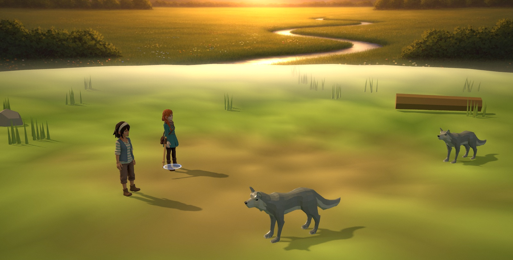
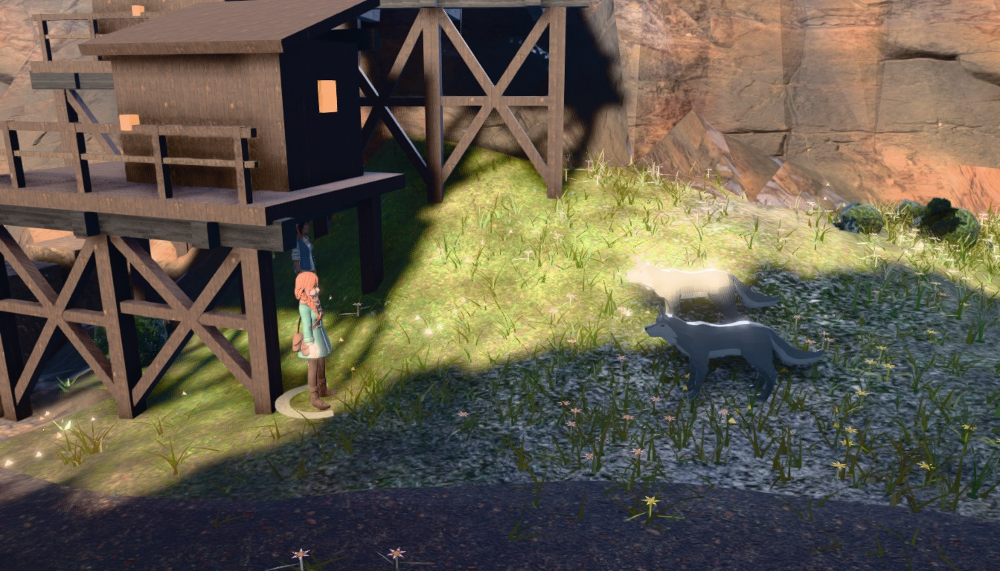
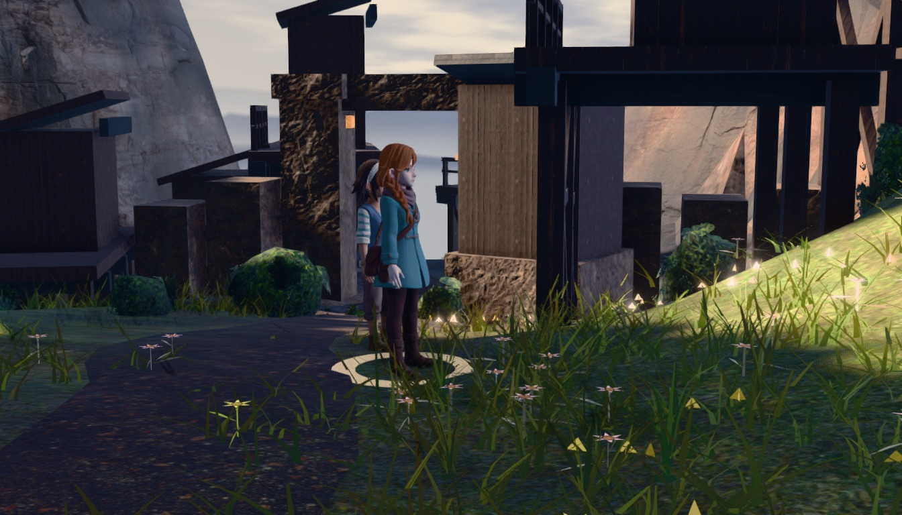
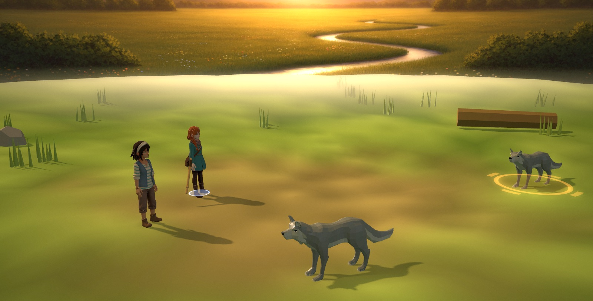
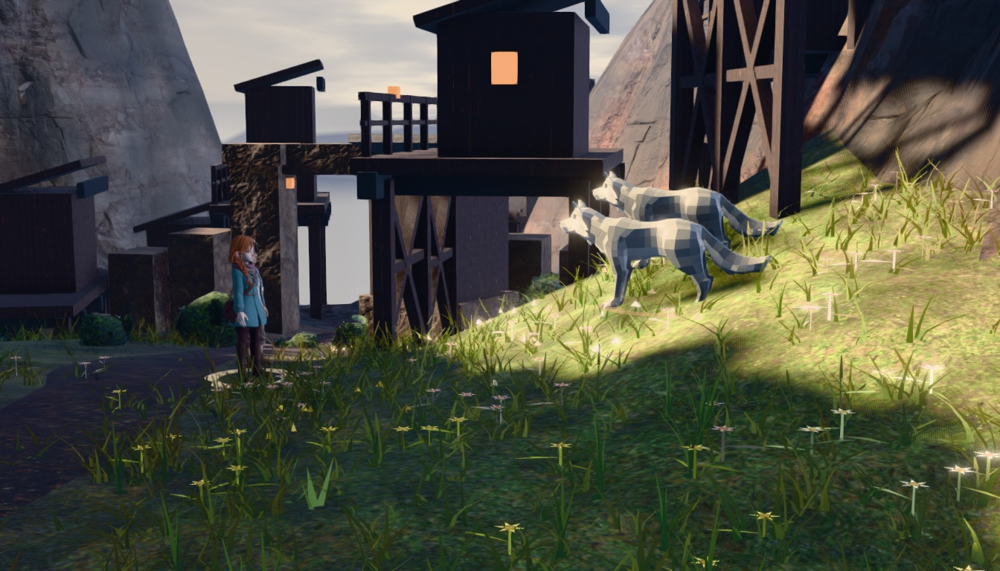
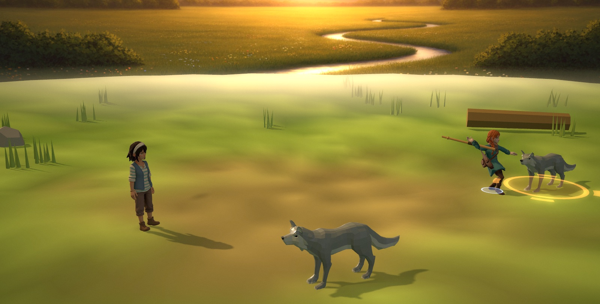
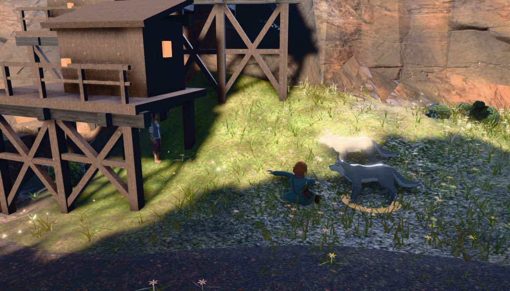
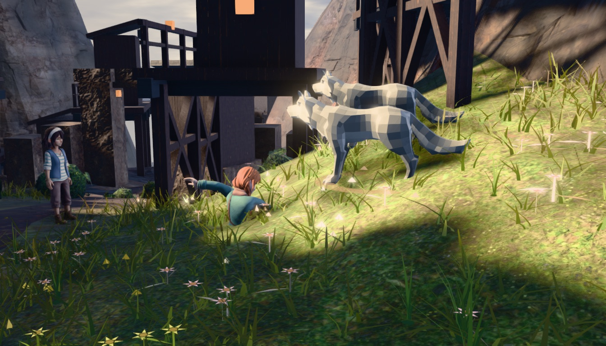
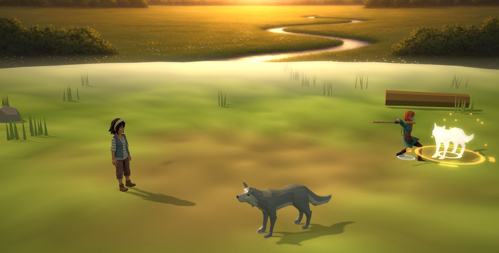
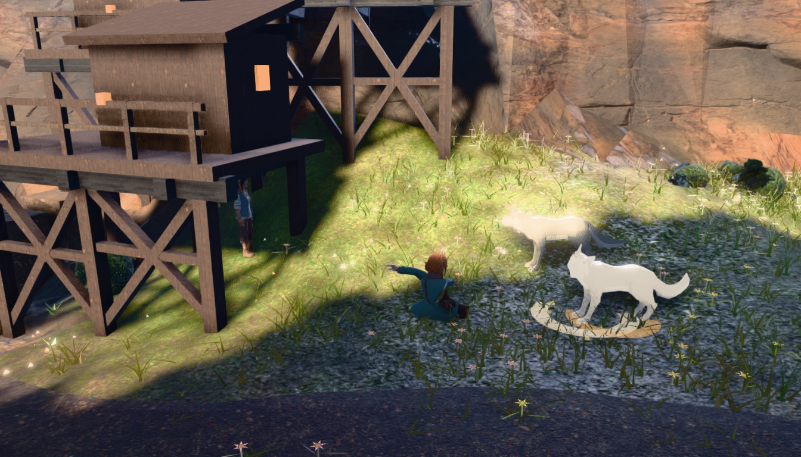
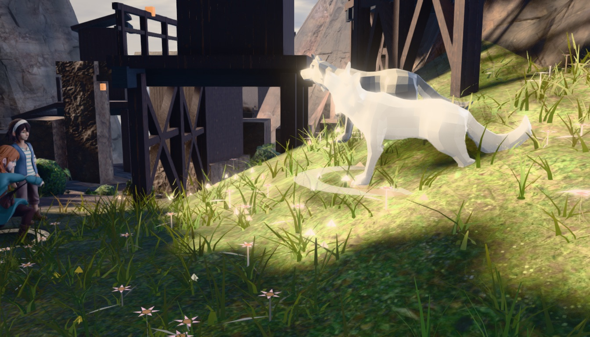
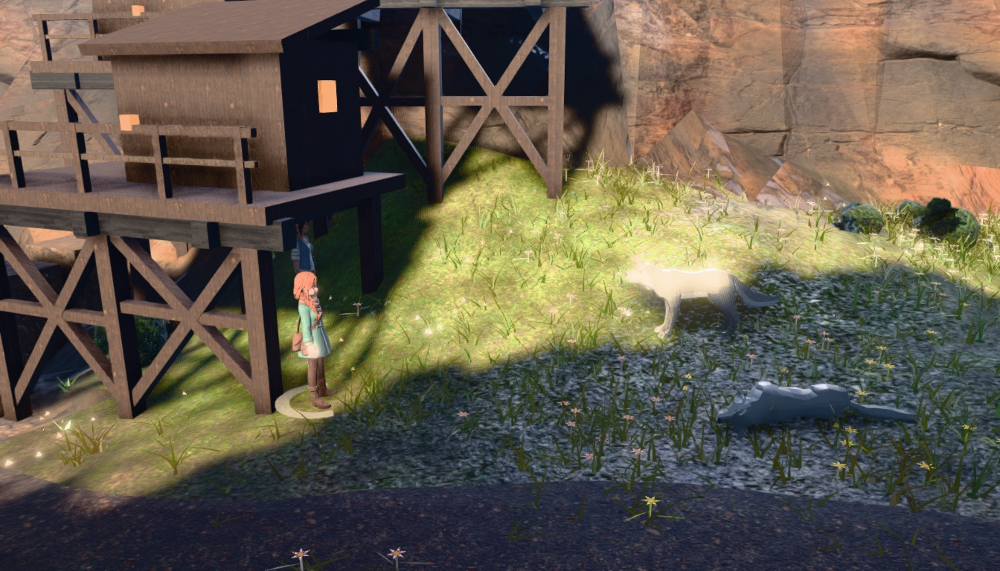
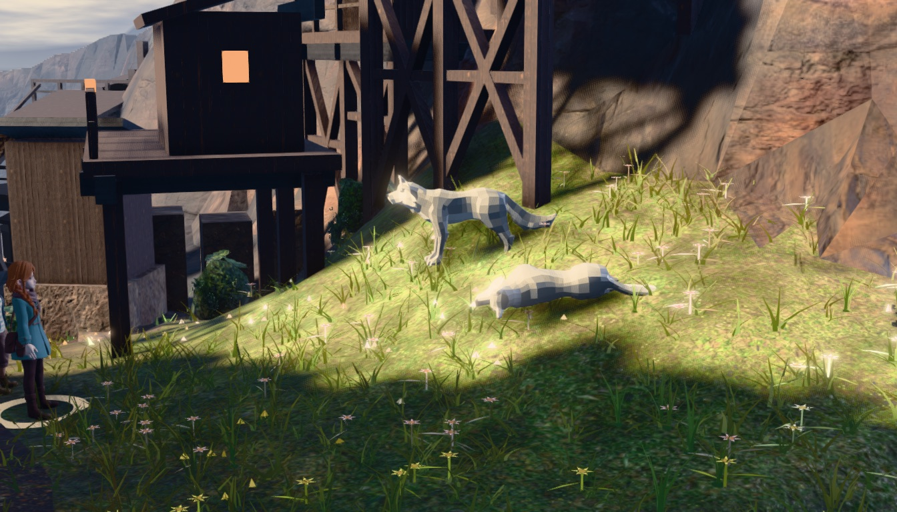
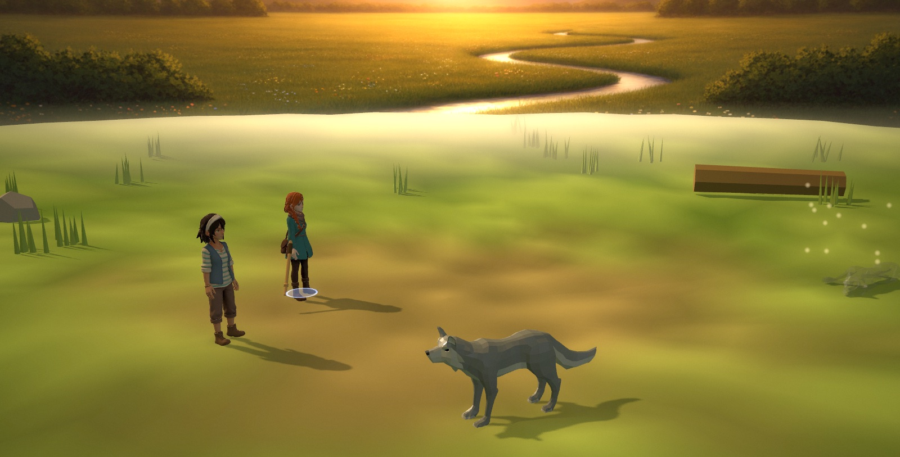
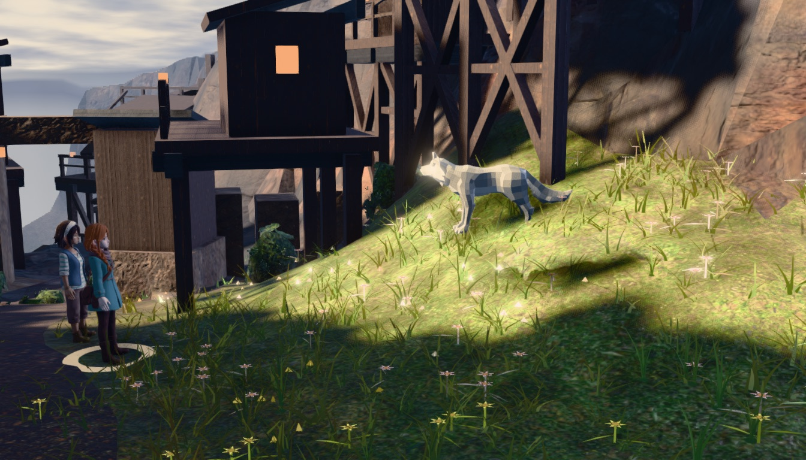
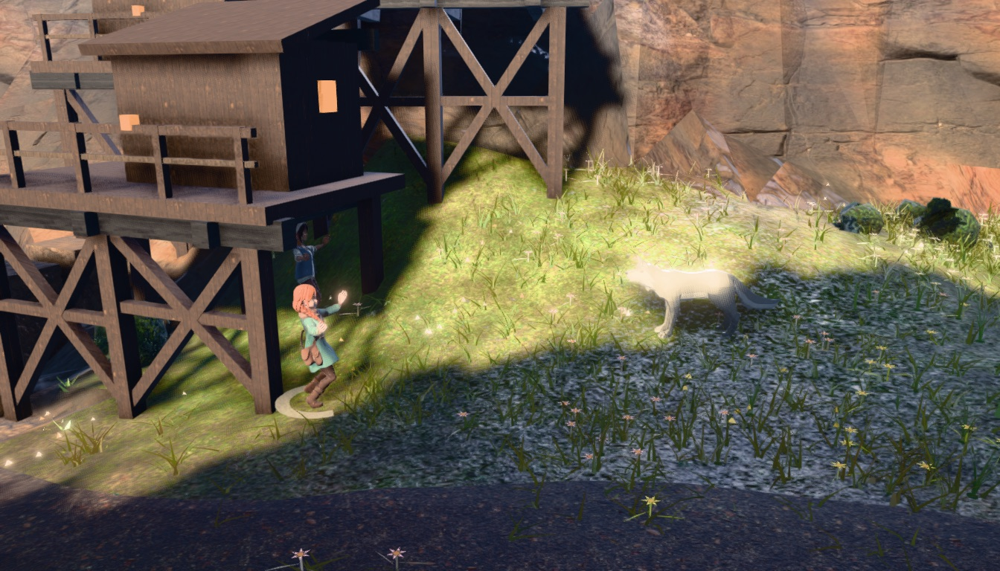
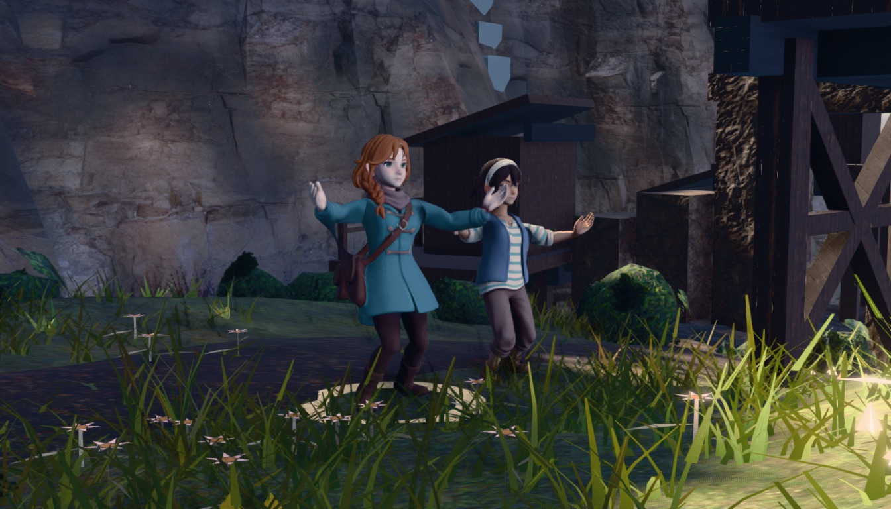
Not one metre value in the table is a camera position. The table carries INTENT — who must be in
frame, how much of the frame they fill, how high the boom rides, how long the lens is, how long the move
takes. The solver turns that into (aim, yaw, pitch, dist, fov) against the cast as it actually
stands, using each body's own measured Box3 height and width — the same discipline the contact fix
used when it derived the strike station from both bodies' widths.
| shot | shows | fill H / V | lens | boom | swing | move | what it is derived from |
|---|---|---|---|---|---|---|---|
round | every living body | 0.86 / 0.74 | 34° | solved base | 0 | 900 ms | the whole group's extremes — feet, heads, and each body's own half-width either side of the camera's screen-right |
decide | the deciding body and its current target | 0.58 / 0.50 | 27° | −0.02 | 0.30 | 620 ms | re-solved when the player moves the cursor; a "medium on the character deciding" that loses what they are aiming at is a bug with a lens on it |
strike | attacker + target | 0.66 / 0.58 | 34° | −0.07 (low) | 0.22 | ≤420 ms | the attacker at the strike station act() has already derived, not at the home slot she is about to leave |
impact | attacker + target | 0.78 / 0.68 | 34° | −0.07 | 0.22 | 170 ms | the same angle, pushed in. A push is not a cut |
ko | the body that fell | 0.30 / 0.36 | 27° | +0.03 | 0.16 | 420 ms + 1180 ms push | the victim's own box where it landed; the push runs across CFG.ko.holdMs |
victory | the surviving party | 0.62 / 0.66 | 27° | −0.05 | 0.95 | 780 ms + 900 ms dolly | the party's own group box; the swing is 54° toward the end of the axis they FACE, so the cheer is seen three-quarter front |
Two derivations worth naming, because both were measured as defects first.
act() starts, with the attacker still at her home slot five metres away. Framing the
pair from there produced a wide shot of a gap she was about to close, and the frame was stale by the time
she arrived. act() already derives the strike station from both bodies' widths — it now hands
that position to the shot solver.CAMCLIP hauls the boom
in when the world intervenes (it keeps running through a battle, which is how this path inherits the fix
PT-20260803-025 is about) — so a shot solved into a bank is not refused, it is silently re-framed at
3 m by somebody else's easing. Each shot therefore tests the boom's own line AND nine samples across each
subject's body, and lifts the boom (+0.09, +0.19 rad) rather than losing the shot.BattleStage3D.CFG.partySide is the only place the handedness of this game is written down.
Wave 3 made the world arena read it (the spike had the party's screen side hardcoded into
slotsFor), and both halves of the rule read the same field:
create() as
axisRef, and any pose whose eye lands on the other side is refused.A refused shot is not softened into something else and shipped. The swing is halved, then dropped
to zero; if the geometry still crosses (two bodies interleaved on the line) the camera keeps the pose it
has and the refusal is counted on stage.cam().refusals. A camera language that can mirror
the fight is worse than one angle.
| shot kind | solved | axis violations | swing softened | refused | min axis gap (normalised screen x) |
|---|---|---|---|---|---|
round | 96 | 0 | 0 | 0 | 0.756 |
decide | 96 | 0 | 8 | 0 | 0.459 |
strike | 96 | 0 | 5 | 0 | 0.582 |
impact | 96 | 0 | 5 | 0 | 0.678 |
ko | 96 | 0 | 2 | 0 | 1.208 |
victory | 96 | 0 | 0 | 0 | 1.221 |
| total | 576 | 0 | 20 | 0 | — |
node tools/battle_camera.mjs --mode=assert — four sites × three encounter
shapes (1, 2 and 3 foes) × every (actor, target) pairing the fight can produce, not one
photographed shot. Exit code is nonzero on any violation. Receipt: assert.json.
The BET A spike's honest verdict: "the world wins on picture and LOSES on legibility — two clean silhouettes on a low-contrast painted field is a composition; the valley is rock, foliage, houses and cast shadows." That is a claim about pixels, so it is measured in pixels.
Render the frame with a body, render it without: the difference IS that body's silhouette — shadow, rim, alpha and all. Render it again with the cast's depth test and depth write off and the difference is the silhouette it would have had unoccluded.
cutin_edge's halo term: a rim of the wrong hue at the right brightness was invisible to it on
79 of 112 shipped plates). A teal eel on tan rock is 6 units apart in luminance and 39 in RGB, and it
reads.| site | foe height, mean | foe height, worst | occlusion, mean | occlusion, worst | silhouette contrast (RGB) | background clutter |
|---|---|---|---|---|---|---|
| meadow | 22.5 → 24.5% | 18.8 → 21.9% | .05 → .03 | .124 → .058 | 18.1 → 9.6 | 41.9 → 55.6 |
| forest (the spike's worst zone) | 24.2 → 30.3% | 14.6 → 18.8% | .13 → .13 | .268 → .273 | 12.0 → 11.9 | 22.3 → 23.3 |
| water | 19.7 → 27.7% | 12.8 → 20.1% | .05 → .02 | .157 → .061 | 29.5 → 15.4 | 14.1 → 29.0 |
| crag | 13.3 → 18.7% | 13.0 → 17.8% | .05 → .04 | .120 → .093 | 20.1 → 20.8 | 17.7 → 17.0 |
Left of each arrow: the world arena on the spike's single solved pose (?bcam=0).
Right: the same build with the shot language. Same site, same seed, same party, same encounter — one
build, one switch. Receipt: legibility.json.
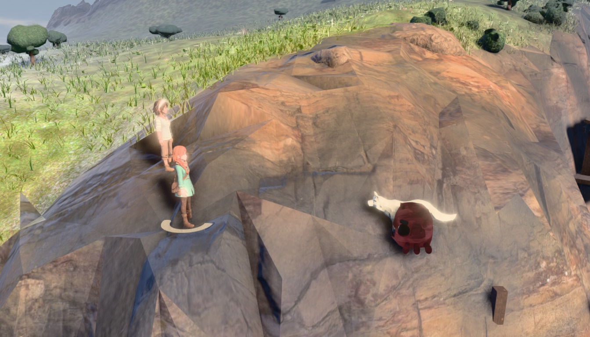
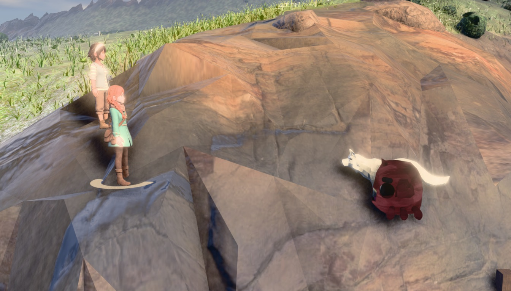
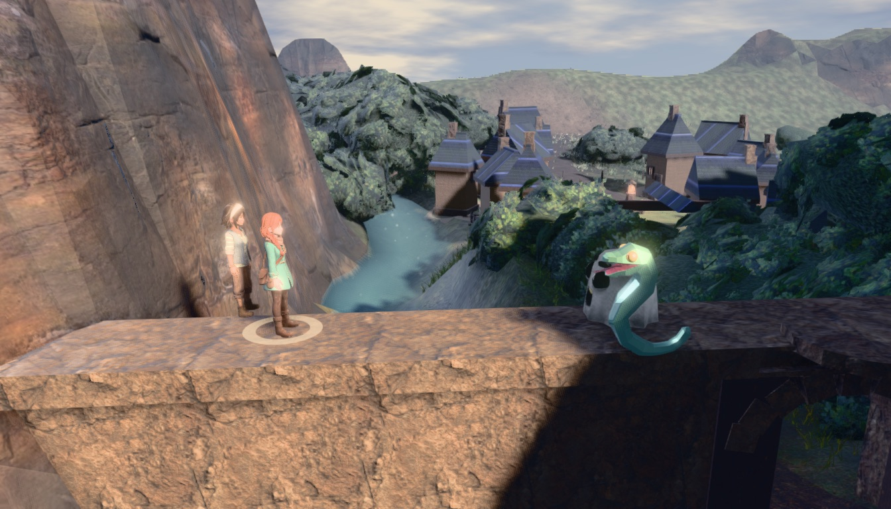
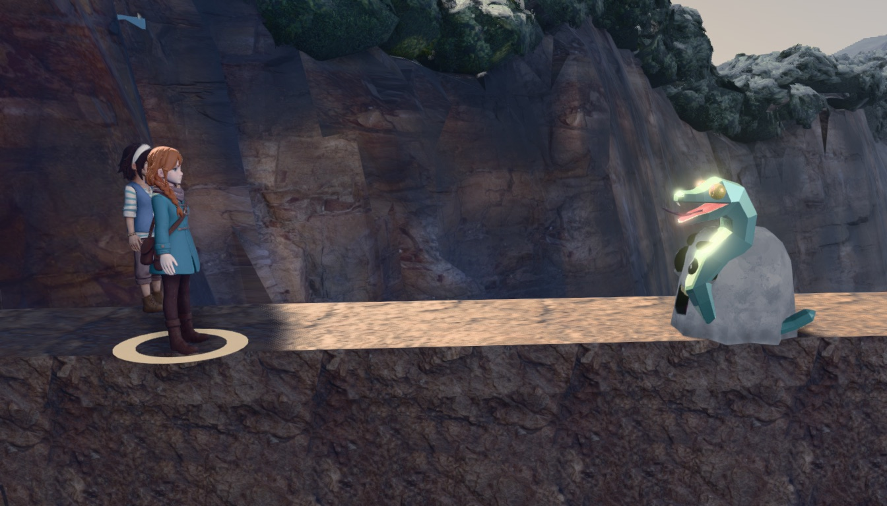
Both were wanted by the KO/victory lane (BET I) and refused there, for the reason this whole document starts from: the diorama's plate is pinned to one pose. In the world they are two entries in the table.
| move | flag off | flag on | what it rides |
|---|---|---|---|
| KO — the boom pushes in across the hold | 0.000 m | 1.35 m (9.63 → 8.28 m) | CFG.ko.holdMs = 760 ms, the beat where the corpse is already lying there; it ends before the dissolve |
| VICTORY — the boom swings to three-quarter front and dollies | 0.000 rad / 0.000 m | 0.95 rad / 0.89 m (9.41 → 8.52 m) | pacing.winHold 900 + winCheer 620 ms, before the tally box arrives |
Measured on the stage's own clock by --mode=moves (the pose is sampled every
40 ms while the beat runs). The KO figures above are the first measured pass at fill 0.40/0.46;
they were loosened to 0.30/0.36 after looking — the push ended on a 5.4 m boom with the body filling
the frame edge to edge, which is a portrait and not a beat in a fight. Receipt: moves.json.
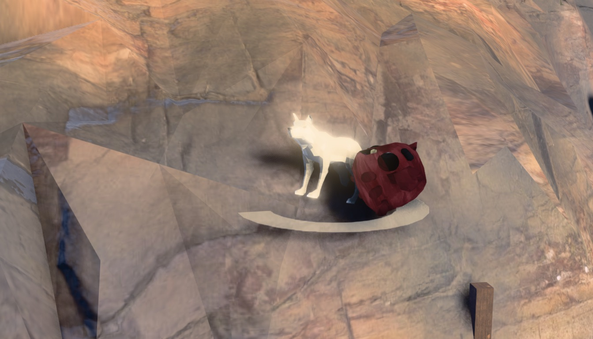
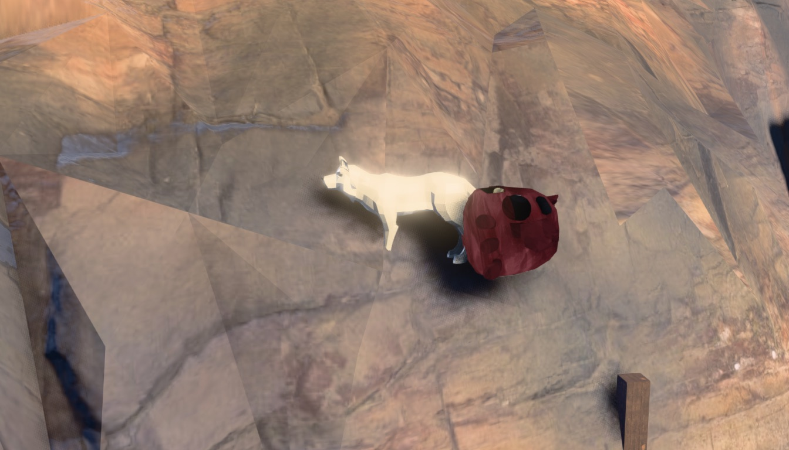
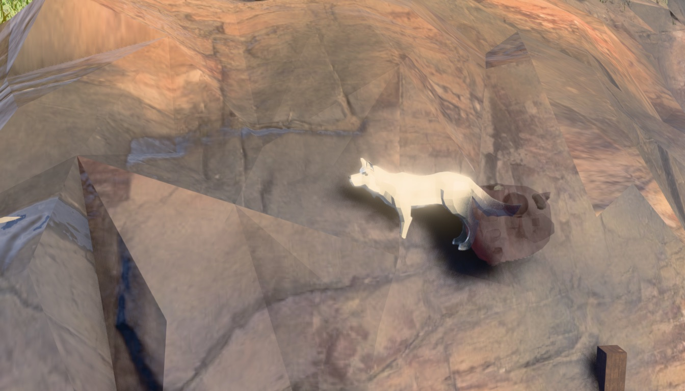
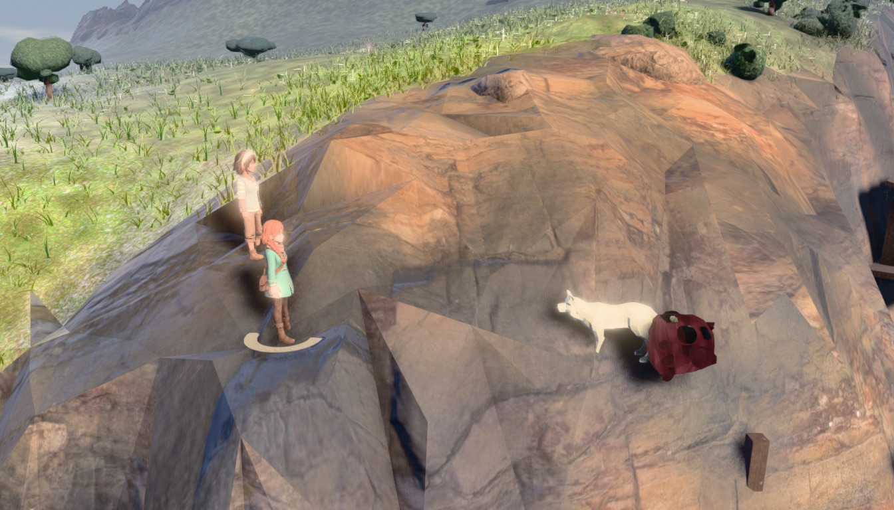
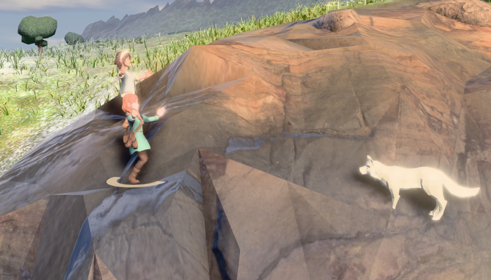
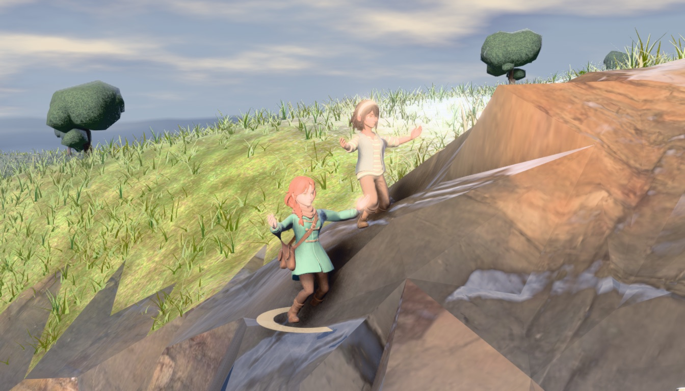
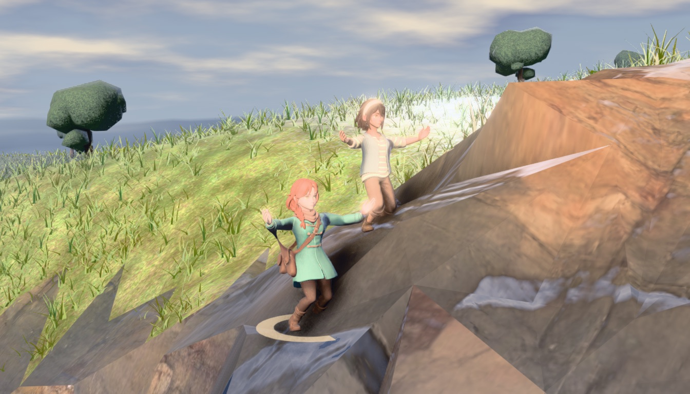
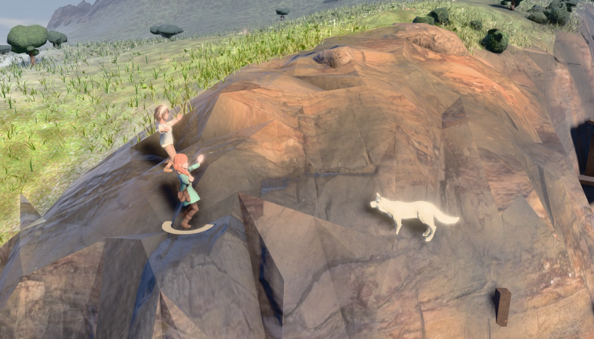
The spike measured 68.8% of sampled encounter cells able to stage a readable 2×2 (forest worst
at 52.1%), after sweeping the arena's yaw. Wave 3 pushed that number in two opposite directions at once and
the net is DOWN 4.4 points. Same instrument, same 160 road cells, same seed:
node tools/battle_world_probe.mjs --mode=place --n=160.
| measure | spike | wave 3 | why |
|---|---|---|---|
| stages cleanly, arena swept | 68.8% | 64.4% | the visibility test became honest (below) and the pitch sweep did not fully pay for it |
| stages cleanly, camera left where the player had it | 32.5% | 31.9% | within noise of each other |
| of the successes, needed the camera to turn | 52.7% | 89.3% | the sweep now takes the BEST view rather than the first that fits, so it turns far more often |
| slot rejections caused by camera occlusion, fixed yaw | 1364 | 1461 | +97 slots that the two-ray test used to pass |
| meadow | 84.7% | 83.1% | |
| crag | 75.0% | 75.0% | |
| water | 58.6% | 44.8% | the biggest single loss |
| forest (the spike's worst zone) | 52.1% | 47.9% |
collide: the world did not get worse, the
instrument stopped lying. The two changes are confounded in this one figure and separating them costs
another 25-minute run that has not been made.
The spike's headline was that the world arena is faster than the diorama (243.5 vs 184.7 fps): a lead worth not spending carelessly. The shot language is a handful of scalar operations per frame plus a few hundred raycasts once, at battle start, behind the entry fade.
| configuration | fps (presented frames, rAF, vsync off) |
|---|---|
world arena, single pose (?bcam=0) | 244.6 |
| world arena + shot language, measured while a move is running | 244.3 |
| field, no battle, same session | 239.6 |
0.1%. The lead is intact. (Absolute numbers differ from the spike's run by a few percent —
different session, same machine, same flags: --disable-gpu-vsync --disable-frame-rate-limit,
without which both paths return exactly 120.0 fps and the measurement is of the display.)
The page opened with no ?arena=world, then a real battle fought:
| claim | measured |
|---|---|
window.BattleWorld | {version:1, on:false, installed:false, why:"flag off — open with ?arena=world"} |
BattleStage3D.__bwPatched | false — create() was never wrapped |
| which stage answered | the DIORAMA (stage.world === false, stage.cam undefined, 4 bodies) |
| WebGL canvases during the battle | 2 — the diorama's second context, exactly as today |
cam.fov before / during / after | 42 / 42 / 42 |
ORBIT before / after | yaw −1.4869, pitch 0.70, tilt 0.16, dist 40, pan 0/0/0 — identical |
| player position before / after | identical to 13 decimal places |
And the lens is the one thing this lane could have leaked. The shot language is the only code in
this game that ever writes cam.fov after construction, and play3d.html never
touches it again — a battle that left a 27° lens on the overworld would be a silent, permanent
regression that no ORBIT receipt could see. It is saved at create() and restored in
destroy(), and every run above asserts 42 after teardown, on all three columns of §1.
| gate | result |
|---|---|
node tools/battle_sim.mjs | ALL ENVELOPES GREEN + 6 engine property tests |
node tools/encounter_sim.mjs | ENCOUNTER INTEGRATION GREEN |
node tools/arena_playtest.mjs | PASS — and see the flake note below |
node tools/transition_test.mjs | 168 ok / 0 failed |
node tools/battle_camera.mjs --mode=assert | 576 shots, 0 axis violations, 0 refused |
battle_rules.js is untouched and unreachable from this module; nothing in this lane
computes a number, changes turn order or touches damage.
git worktree of the parent commit on a second port, which is the only way to
tell "my change broke it" from "the machine is thrashing".
arena_playtest's organic suite failed twice on this branch with
no hostile zone reachable, and passed on the parent. Run the two concurrently, which
equalises the load, and BOTH FAIL identically. The suite's findHostile() asks
SIM.walkFloors / SIM.ground for candidate cells as soon as the world reports
ready; under load the region's meshes are not queryable yet and it finds nothing. Serial and unloaded, this
branch passes.transition_test returned 167/1 once — the standing
after battle: … back to its baseline geometry-delta assertion — on a run whose worst scene
load was 45.5 seconds. Re-run serially it is 168/0. The test's own URL carries no
?arena=world, so battle_world.js is the frozen inert object throughout it and
cannot allocate anything at all.The camera language moves me further toward the world, and it does it for a reason that is
structural rather than aesthetic: in the world the camera is an instrument, and in the diorama it is a
constant. Every number in §4 came out of choosing a distance and a lens per shot from the bodies in
front of them. The diorama cannot do that at all — not badly, at all — because its four plates were
generated from one stated height, tilt and fov, and the backdrop band is built around restPos
and only restPos. Under BET E that is not a tuning job; it is a re-bake of the backdrop for
every angle a shot language would want, which is exactly the "make the diorama better" answer that already
failed to satisfy once.
But I would not call the world-vs-diorama question closed by this lane, and the honest reason is in §4's second box. Look at the meadow row of §1: the diorama frame is still the most readable picture on that page — two clean silhouettes, a horizon at 42%, nothing behind them competing. The shot language closes the gap that the audit named (the foes are no longer the smallest thing on screen: worst case 13.0% → 17.8%, and up at all four sites) and it does not close the gap the spike named (separation from a busy background). What it does do is change what the remaining gap costs: it is now one localised problem — the cast does not separate tonally from mid-value terrain — with known, cheap, shader-side answers, rather than a property of the whole arena.
So my recommendation is unchanged in shape and stronger in confidence: both paths, one flag, and the diorama stays as the fallback the world path already falls to. If the ruling goes to BET A, the camera language is already there and costs 0.1% of the frame. If it goes to BET E, none of this work is wasted or even touched — no plate moved, no diorama camera moved, and the flag is still off by default.
onBeforeCompile on the body materials only — which would
give this module its first shader and re-open the r185 colour-management class it currently avoids by
construction. Not attempted; it deserves its own decision.sides() accessor. This lane's instrument falls back to
/^m\d+$/ for that column only, and says so in its own source; /^m/ matches
maren, which is how the audit's impact captures once staged Vesper against her own party member.speed: 1 the turn loop is
parked at the player's own decision prompt while the contact sheet is shot, so a frame can contain both
the loop's actor and the harness's. The beats are still the beats; the actor in a given frame may not be
the one named in the caption.cut: false pending
§11.11's coordinator ruling. The machinery to honour a cut is one branch in goTo.node tools/battle_camera.mjs --port=3000 --mode=shots --site=meadow # the three-column contact sheet node tools/battle_camera.mjs --port=3000 --mode=legibility # the meter, 4 sites, cam off vs on node tools/battle_camera.mjs --port=3000 --mode=assert # the 180-degree rule, 576 shots node tools/battle_camera.mjs --port=3000 --mode=moves --site=crag # the KO push and the victory move node tools/battle_camera.mjs --port=3000 --mode=fps # vsync off node tools/battle_camera.mjs --port=3000 --mode=regress # flag OFF proof node tools/battle_world_probe.mjs --mode=place --port=3000 --n=160 # the staging distribution
Receipts in this directory: shots.json · legibility.json ·
assert.json · moves.json · fps.json · regress.json ·
placement.json. Runtime knobs: ?arena=world turns the world arena on,
?bcam=0 turns the shot language off and leaves the spike's single solved pose;
BattleWorld.CAM is the live table and stage.cam() / stage.shotTable()
are the QA surfaces every assertion above is built on.